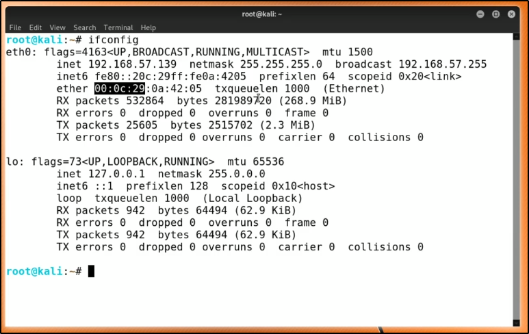

MAC Address : select first 3 pair and search for " mac address lookup " on google . . first 3 pair are indentifier they give info about MAC address's device

=> To open wire shark : wireshark&

it will open wire shark GUI.
1. click on start capturing data.
we see some UDP protocal data.
2. search google.com to see TCP protocal data
Now, ouur source address is 192.168.57.139 and destination is 74.125.21.155
-> our source send SYN request to destination with port 52610 --> 443 to connect over TCP
-> if port 443 is open and available for connection then ,desination send SYN ACK to source .
-> source send ACK packet back to confirm connection .
i.e. 3 way handshake .